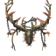
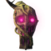
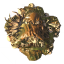
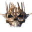
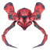
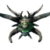

Valheim-Bosse in der richtigen Reihenfolge
Valheim erzählt seine Geschichte über die Bosse, die Verlassenen. Jeder bewacht ein Biom, und jeder lässt den Gegenstand fallen, der den nächsten Schritt freischaltet: die Geweihspitzhacke für den Bergbau, den Schlüssel zu den Sumpfkrypten, die Wünschelrute, die Silber aufspürt. Sie der Reihe nach zu besiegen ist das Rückgrat jedes Durchgangs.
Die Tabelle zeigt alle Bosse des Hauptfortschritts mit Biom, Gesundheit und den Gegenständen, die du opfern musst. Jeder Boss hat eine eigene Seite mit Schwächen, Angriffsmustern und praktischen Tipps. In jeder Welt gibt es pro Boss mehrere Altäre. Gib deinen Seed auf der Karte ein und du siehst, wo deine stehen.
| # | Boss | Biom | Gesundheit | Beschwörungsgegenstand |
|---|---|---|---|---|
| 1 |  Eikthyr | Grasland | 500 | 2 × Hirsch-Trophäe |
| 2 |  Der Uralte | Düsterwald | 2.500 | 3 × Uralter Samen |
| 3 |  Knochenwanst | Sumpfland | 5.000 | 10 × Verwitterter Knochen |
| 4 | Gebirge | 7.500 | 3 × Drachenei | |
| 5 |  Yagluth | Ebenen | 10.000 | 5 × Fuling-Totem |
| 6 |  Die Königin | Nebellande | 12.500 | 1 × Siegelbrecher |
| 7 |  Fader | Aschenlande | 25.000 | 3 × Glocke |
Jeder besiegte Boss hinterlässt eine Trophäe. Häng sie an ihren Haken bei den Opfersteinen und du schaltest die Verlassenen-Kraft des Bosses frei. Du kannst immer nur eine Kraft ausgewählt haben. Sie hält 5 Minuten und braucht danach 20 Minuten zum Aufladen.
Im Mehrspieler werden Bosse mit jedem weiteren Spieler in der Nähe zäher und schlagen härter zu. Mehr Spieler machen einen Kampf also nicht zum Selbstläufer.